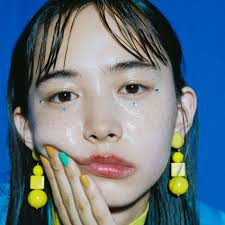
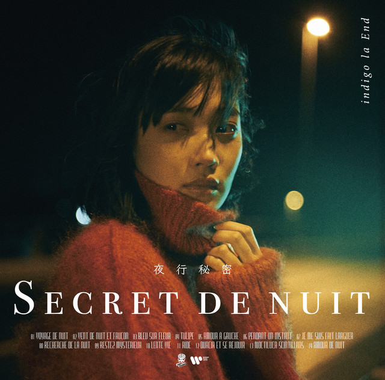
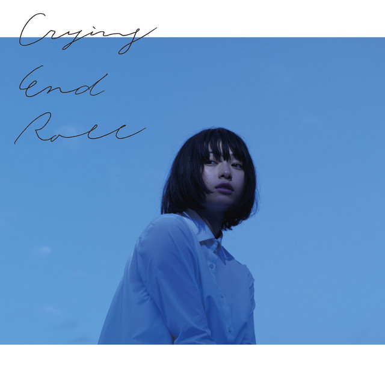
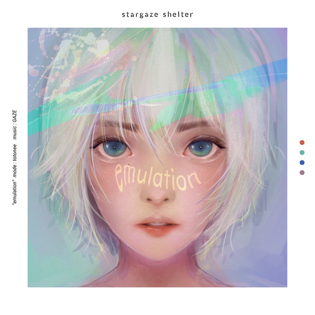
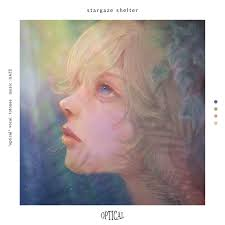
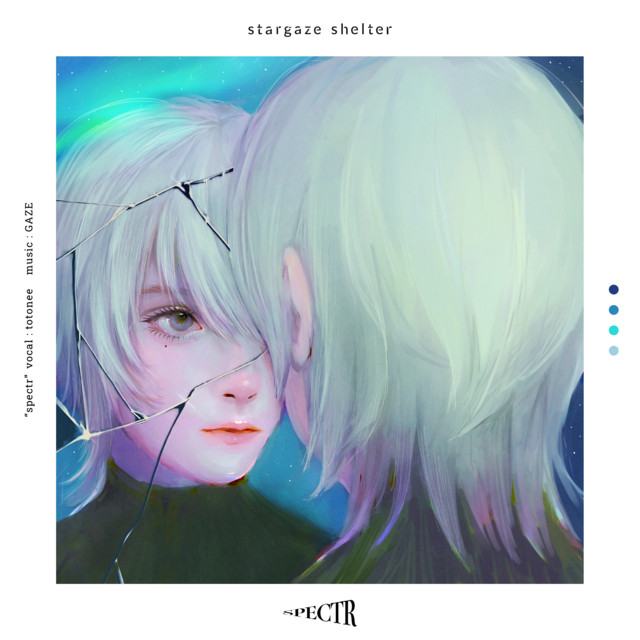

花傘

チューリップ

想いきり
Formation & Members: Indigo la End is a Japanese rock band formed
in 2010, led by vocalist, guitarist, and songwriter Enon Kawatani. The band consists of Enon Kawatani
(vocals/guitar), Osada Curtis (guitar), Gochou Ryousuke (bass), and Sato Eitaro (drums). Sound &
Style: Known for their melodic, emotional indie-rock sound with introspective lyrics, they are
associated with acts like Gesu no Kiwami Otome. Legacy: They have gained recognition for their
unique fusion of alternative rock and indie sensibilities, establishing themselves as a significant force in the
Japanese indie music scene.

Emulation

Optical

Spectr
Formation & Members: Stargaze Shelter (stylized in
lowercase) is a Japanese 2.5D Nu Dreampop/Shoegaze music duo active since 2020. The unit consists of members
Hoshimiya Toto (星宮とと), totonee, and gaze//he's me. Sound & Style: Known for their atmospheric,
immersive soundscapes blending dreampop and shoegaze influences, they create ethereal and emotionally resonant
indie-pop experiences. Production: Their music is characterized by lush synths, reverb-heavy
guitars, and innovative production techniques that transport listeners to ethereal sonic landscapes.